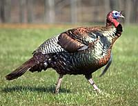
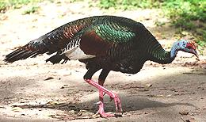

SAFARI
Users
- General & History
- Types of Turkey
- Roasting a Turkey #1 - modern method and complete details.
- Roasting a Turkey #2 - "heirloom" method and complete details.
General & History
 The turkey is a North and Central American bird. Different varieties were domesticated in the American Southwest and in southern Mexico at least 2000 years ago. Initially they were for ceremonial use and for feathers, but around the year 1000 CE game became scarce and they became food.
The North American line of domesticated turkeys is now extinct and our Thanksgiving turkeys are descended from those carefully bred by the Aztecs in Mexico for plumpness and flavor. The photo, (© i0040) is of a North American wild turkey tom (Meleagris gallopavo).
When these domesticated birds were introduced to Europe they completely displaced the less tasty peacock for important banquets well before the Pilgrims sailed. There was, however, great confusion in Europe as to where turkeys came from. In French they're blamed on India and in English they may be named for the country of Turkey but there are other theories.
Historians say if turkeys were served by Pilgrims they were likely Mexican turkeys, some of which may have been brought over in 1620. Mexican turkeys had been introduced to Europe 100 years before and by then would have been considered normal supplies. In their natural habitat wild turkeys are extremely difficult to bag even with modern hunting gear, never mind the primitive stuff Pilgrims would have had. Their ability to elude hunters has been described as "near to genius".
Since the story of the First Thanksgiving was made up entirely from scratch during the Lincoln administration (1863) we don't know for sure if Pilgrims even ate turkey. The real "First Thanksgiving" upon which our "tradition" is based was more of an out-of-control beer bash than a religious event. If you don't believe that, ask the Smithsonian, they have the details.
Today North American wild turkeys have increased from a low of as few as 30,000 to millions and have adjusted to suburban living. Having learned that it's illegal to shoot them in suburbia they're becoming pests like raccoons and deer. Toms, which can stand as high as 4 feet and run at 20 miles per hour (and yes, they can fly) are even fighting it out face to face with humans for territorial domination.
Types of Turkey
The main question people ask is: "Is it a tom or a hen?". Toms are thought by some cooks to be tastier than hens. Other cooks say there isn't a noticeable difference and that's the stance taken by the poultry industry. Hens are thought by some cooks to have a higher proportion of light meat to dark. Again others say not, no matter how many bibles the believer swears upon. Basically, in any batch of turkeys, the hens will be the smaller ones and the toms will be the larger ones. Aside from weight, don't worry about it.
Large White
-or-Broad Breasted White
is your supermarket turkey. It is not actually a breed because each major producer has created slightly different birds and keeps its own cross breeding secret. All are good "factory turkeys", fast growing and tolerant of crowded conditions. They are meaty and economical to purchase but not particularly flavorful. Breeders have grown toms to around 100 pounds.Standard Bronze
is an "heirloom" turkey widely grown on family farms until the 1930s. It is now a favorite with boutique growers of "free range" and "organic free range" turkeys. At least one farm even has a "turkey cam" so you can watch your thanksgiving dinner and his/her pals at work and play until the day it's shipped to you Overnight Express. You need to reserve these in advance and it's going to set you back around $150 for a 16 pound turkey. Of course your average celebrity chef will have nothing less.Bourbon Red
is another "heirloom" turkey that has had its 15 minutes of fame among the celebrity chefs. It is grown and marketed similarly to the Standard Bronze.Beltsville Small White
is a breed developed to provide a "family size" turkey, considerably smaller than the Standard Bronze and other turkeys of its day. White feathers were selected for the pale skin preferred by consumers. Today this breed is pretty much extinct but lives on as the base breeding stock used to develop the Large White of today's commerce.Ocellated Turkey
 [Pavo, Pavo Ocelado (Spanish); Ucutz il Chican (Mayan); Meleagris ocellata]
This wild turkey only lives in Southern Mexico, Belize and part of
Guatemala. They are relatively small with hens topping out at 8 pounds and
toms at 12 pounds. They're listed as "NT" (Near Threatened) which is a lot
better than many birds and animals are doing these days.
Photo by Bruno Girin distributed under license
Creative
Commons Attribution-Share Alike 2.0 Generic.